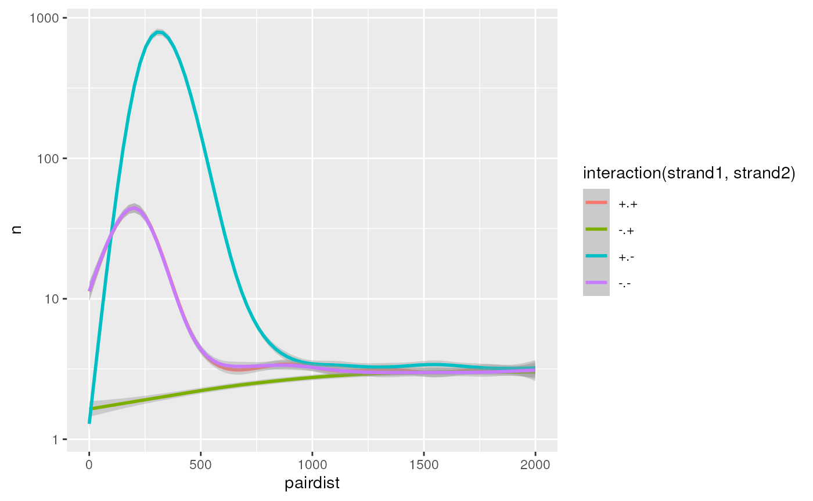
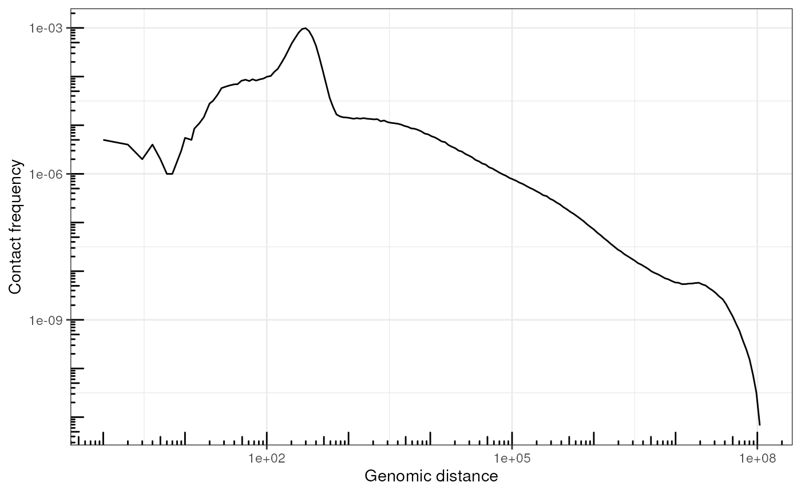
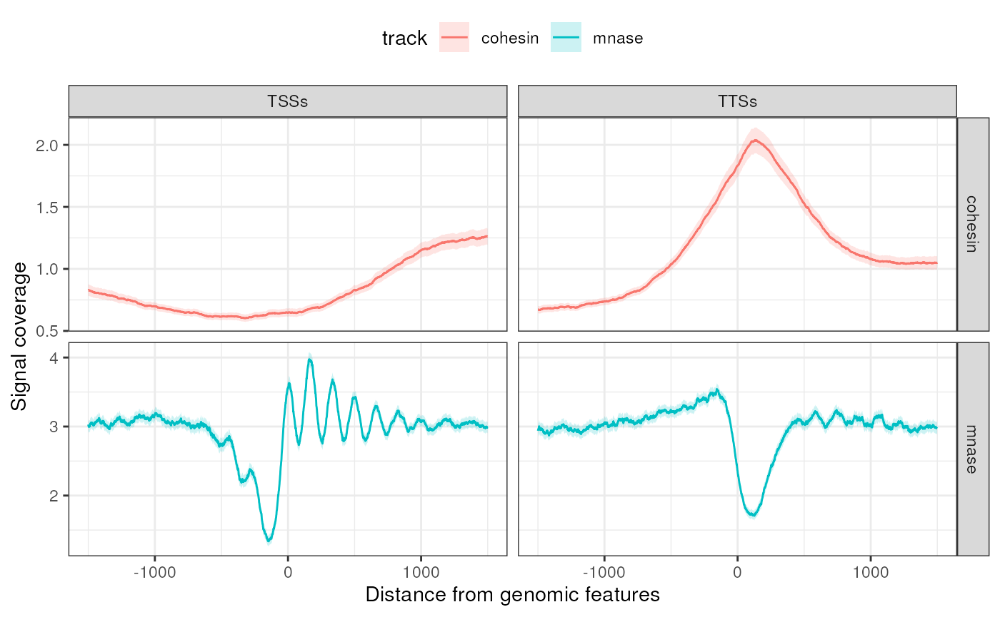
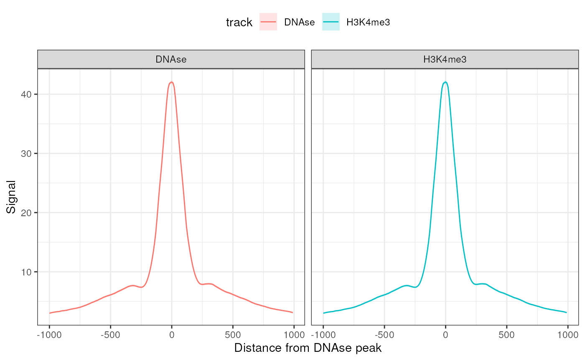
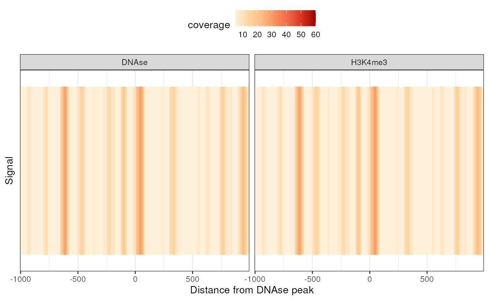

vignettes/workshop.Rmd
workshop.RmdRecommended time: 10 min
GRanges from files
The BiocIO::import() generic function lets one import
bed files (or alike) into GRanges object in
R.
library(GenomicRanges)
#> Loading required package: stats4
#> Loading required package: BiocGenerics
#>
#> Attaching package: 'BiocGenerics'
#> The following objects are masked from 'package:stats':
#>
#> IQR, mad, sd, var, xtabs
#> The following objects are masked from 'package:base':
#>
#> anyDuplicated, aperm, append, as.data.frame, basename, cbind,
#> colnames, dirname, do.call, duplicated, eval, evalq, Filter, Find,
#> get, grep, grepl, intersect, is.unsorted, lapply, Map, mapply,
#> match, mget, order, paste, pmax, pmax.int, pmin, pmin.int,
#> Position, rank, rbind, Reduce, rownames, sapply, setdiff, table,
#> tapply, union, unique, unsplit, which.max, which.min
#> Loading required package: S4Vectors
#>
#> Attaching package: 'S4Vectors'
#> The following object is masked from 'package:utils':
#>
#> findMatches
#> The following objects are masked from 'package:base':
#>
#> expand.grid, I, unname
#> Loading required package: IRanges
#> Loading required package: GenomeInfoDb
library(rtracklayer)
bedf <- system.file('extdata', 'S288C-borders.bed', package = 'Bioc2024tidyWorkshop', mustWork = TRUE)
import(bedf)
#> GRanges object with 814 ranges and 0 metadata columns:
#> seqnames ranges strand
#> <Rle> <IRanges> <Rle>
#> [1] I 73001-74000 *
#> [2] I 108001-109000 *
#> [3] I 181001-182000 *
#> [4] II 90001-91000 *
#> [5] II 119001-120000 *
#> ... ... ... ...
#> [810] XVI 777001-778000 *
#> [811] XVI 796001-797000 *
#> [812] XVI 811001-812000 *
#> [813] XVI 890001-891000 *
#> [814] XVI 933001-934000 *
#> -------
#> seqinfo: 16 sequences from an unspecified genome; no seqlengthsThe tidy way of importing genomic ranges in R, however, is to read
files as a data.frame (or tibble) and
coerce it as a GRanges once it’s imported in
memory.
library(tidyverse)
#> ── Attaching core tidyverse packages ──────────────────────── tidyverse 2.0.0 ──
#> ✔ dplyr 1.1.4 ✔ readr 2.1.5
#> ✔ forcats 1.0.0 ✔ stringr 1.5.1
#> ✔ ggplot2 3.5.1 ✔ tibble 3.2.1
#> ✔ lubridate 1.9.3 ✔ tidyr 1.3.1
#> ✔ purrr 1.0.2
#> ── Conflicts ────────────────────────────────────────── tidyverse_conflicts() ──
#> ✖ lubridate::%within%() masks IRanges::%within%()
#> ✖ dplyr::collapse() masks IRanges::collapse()
#> ✖ dplyr::combine() masks BiocGenerics::combine()
#> ✖ dplyr::desc() masks IRanges::desc()
#> ✖ tidyr::expand() masks S4Vectors::expand()
#> ✖ dplyr::filter() masks stats::filter()
#> ✖ dplyr::first() masks S4Vectors::first()
#> ✖ dplyr::lag() masks stats::lag()
#> ✖ ggplot2::Position() masks BiocGenerics::Position(), base::Position()
#> ✖ purrr::reduce() masks GenomicRanges::reduce(), IRanges::reduce()
#> ✖ dplyr::rename() masks S4Vectors::rename()
#> ✖ lubridate::second() masks S4Vectors::second()
#> ✖ lubridate::second<-() masks S4Vectors::second<-()
#> ✖ dplyr::slice() masks IRanges::slice()
#> ℹ Use the conflicted package (<http://conflicted.r-lib.org/>) to force all conflicts to become errors
tib <- read_tsv(bedf, col_names = FALSE)
#> Rows: 814 Columns: 3
#> ── Column specification ────────────────────────────────────────────────────────
#> Delimiter: "\t"
#> chr (1): X1
#> dbl (2): X2, X3
#>
#> ℹ Use `spec()` to retrieve the full column specification for this data.
#> ℹ Specify the column types or set `show_col_types = FALSE` to quiet this message.
tib
#> # A tibble: 814 × 3
#> X1 X2 X3
#> <chr> <dbl> <dbl>
#> 1 I 73000 74000
#> 2 I 108000 109000
#> 3 I 181000 182000
#> 4 II 90000 91000
#> 5 II 119000 120000
#> 6 II 136000 137000
#> 7 II 141000 142000
#> 8 II 146000 147000
#> 9 II 159000 160000
#> 10 II 198000 199000
#> # ℹ 804 more rows
library(plyranges)
#>
#> Attaching package: 'plyranges'
#>
#> The following objects are masked from 'package:dplyr':
#>
#> between, n, n_distinct
#>
#> The following object is masked from 'package:IRanges':
#>
#> slice
#>
#> The following object is masked from 'package:stats':
#>
#> filter
gr <- as_granges(tib, seqnames = X1, start = X2, end = X3)
gr
#> GRanges object with 814 ranges and 0 metadata columns:
#> seqnames ranges strand
#> <Rle> <IRanges> <Rle>
#> [1] I 73000-74000 *
#> [2] I 108000-109000 *
#> [3] I 181000-182000 *
#> [4] II 90000-91000 *
#> [5] II 119000-120000 *
#> ... ... ... ...
#> [810] XVI 777000-778000 *
#> [811] XVI 796000-797000 *
#> [812] XVI 811000-812000 *
#> [813] XVI 890000-891000 *
#> [814] XVI 933000-934000 *
#> -------
#> seqinfo: 16 sequences from an unspecified genome; no seqlengthsNote how refering to column names is done using tidy evaluation.
GRanges with tidy verbs
With plyranges, a
number of tidy operations are readily available, e.g.:
Just like with tidyverse functions, these operations
work well with the native |> pipe in R.
gr |>
mutate(score = runif(n())) |>
filter(score > 0.2) |>
mutate(round_score = round(score, digits = 1)) |>
group_by(round_score) |>
summarize(mean = mean(score))
#> DataFrame with 9 rows and 2 columns
#> round_score mean
#> <numeric> <numeric>
#> 1 0.2 0.223774
#> 2 0.3 0.295649
#> 3 0.4 0.395325
#> 4 0.5 0.503838
#> 5 0.6 0.605391
#> 6 0.7 0.696852
#> 7 0.8 0.798926
#> 8 0.9 0.897357
#> 9 1.0 0.976044But really, what plyranges excels at is providing direct
access to “protected” variables, i.e. seqnames,
start, end, width,
strand, …
gr |>
mutate(
seqnames = factor('XVI', levels(seqnames)),
width = 1,
strand = rep(c('-', '+'), n()/2)
)
#> GRanges object with 814 ranges and 0 metadata columns:
#> seqnames ranges strand
#> <Rle> <IRanges> <Rle>
#> [1] XVI 73000 -
#> [2] XVI 108000 +
#> [3] XVI 181000 -
#> [4] XVI 90000 +
#> [5] XVI 119000 -
#> ... ... ... ...
#> [810] XVI 777000 +
#> [811] XVI 796000 -
#> [812] XVI 811000 +
#> [813] XVI 890000 -
#> [814] XVI 933000 +
#> -------
#> seqinfo: 16 sequences from an unspecified genome; no seqlengthsFinally, a number of operations for genomic arithmetics are provided
by plyranges:
gr |>
anchor_center() |>
stretch(extend = -1000) |>
shift_upstream(250) |>
flank_upstream(100)
#> GRanges object with 814 ranges and 0 metadata columns:
#> seqnames ranges strand
#> <Rle> <IRanges> <Rle>
#> [1] I 73150-73249 *
#> [2] I 108150-108249 *
#> [3] I 181150-181249 *
#> [4] II 90150-90249 *
#> [5] II 119150-119249 *
#> ... ... ... ...
#> [810] XVI 777150-777249 *
#> [811] XVI 796150-796249 *
#> [812] XVI 811150-811249 *
#> [813] XVI 890150-890249 *
#> [814] XVI 933150-933249 *
#> -------
#> seqinfo: 16 sequences from an unspecified genome; no seqlengthsGInteractions?
Recommended time: 15 min
GInteractions object from scratch
GInteractions class of object combines pairs of
interacting GRanges together. It is defined by the
InteractionSet package.
Each side of the pair is referred to as “anchors”
(e.g. anchors1 and anchors2 refer to left-hand
and right-hand side of the genomic interaction).
library(InteractionSet)
#> Loading required package: SummarizedExperiment
#> Loading required package: MatrixGenerics
#> Loading required package: matrixStats
#>
#> Attaching package: 'matrixStats'
#> The following object is masked from 'package:dplyr':
#>
#> count
#>
#> Attaching package: 'MatrixGenerics'
#> The following objects are masked from 'package:matrixStats':
#>
#> colAlls, colAnyNAs, colAnys, colAvgsPerRowSet, colCollapse,
#> colCounts, colCummaxs, colCummins, colCumprods, colCumsums,
#> colDiffs, colIQRDiffs, colIQRs, colLogSumExps, colMadDiffs,
#> colMads, colMaxs, colMeans2, colMedians, colMins, colOrderStats,
#> colProds, colQuantiles, colRanges, colRanks, colSdDiffs, colSds,
#> colSums2, colTabulates, colVarDiffs, colVars, colWeightedMads,
#> colWeightedMeans, colWeightedMedians, colWeightedSds,
#> colWeightedVars, rowAlls, rowAnyNAs, rowAnys, rowAvgsPerColSet,
#> rowCollapse, rowCounts, rowCummaxs, rowCummins, rowCumprods,
#> rowCumsums, rowDiffs, rowIQRDiffs, rowIQRs, rowLogSumExps,
#> rowMadDiffs, rowMads, rowMaxs, rowMeans2, rowMedians, rowMins,
#> rowOrderStats, rowProds, rowQuantiles, rowRanges, rowRanks,
#> rowSdDiffs, rowSds, rowSums2, rowTabulates, rowVarDiffs, rowVars,
#> rowWeightedMads, rowWeightedMeans, rowWeightedMedians,
#> rowWeightedSds, rowWeightedVars
#> Loading required package: Biobase
#> Welcome to Bioconductor
#>
#> Vignettes contain introductory material; view with
#> 'browseVignettes()'. To cite Bioconductor, see
#> 'citation("Biobase")', and for packages 'citation("pkgname")'.
#>
#> Attaching package: 'Biobase'
#> The following object is masked from 'package:MatrixGenerics':
#>
#> rowMedians
#> The following objects are masked from 'package:matrixStats':
#>
#> anyMissing, rowMedians
gr1 <- GRanges("I:10-50")
gr2 <- GRanges("I:100-110")
GInteractions(anchor1 = gr1, anchor2 = gr2)
#> GInteractions object with 1 interaction and 0 metadata columns:
#> seqnames1 ranges1 seqnames2 ranges2
#> <Rle> <IRanges> <Rle> <IRanges>
#> [1] I 10-50 --- I 100-110
#> -------
#> regions: 2 ranges and 0 metadata columns
#> seqinfo: 1 sequence from an unspecified genome; no seqlengthsA GInteractions object can also be generated by specific
a set of regions (as a GRanges object with
multiple entries) and a set of numerical indices linking the different
regions by pairs.
GInteractions(anchor1 = c(1, 2, 3), anchor2 = c(1, 4, 5), regions = gr)
#> GInteractions object with 3 interactions and 0 metadata columns:
#> seqnames1 ranges1 seqnames2 ranges2
#> <Rle> <IRanges> <Rle> <IRanges>
#> [1] I 73000-74000 --- I 73000-74000
#> [2] I 108000-109000 --- II 90000-91000
#> [3] I 181000-182000 --- II 119000-120000
#> -------
#> regions: 814 ranges and 0 metadata columns
#> seqinfo: 16 sequences from an unspecified genome; no seqlengthsA GInteractions object is typically imported in R from a
file storing genomic interactions, e.g. a bedpe file or a
pairs file, using the as_ginteractions()
coercing function from the plyinteractions package.
bedpef <- system.file('extdata', 'S288C-loops.bedpe', package = 'Bioc2024tidyWorkshop', mustWork = TRUE)
tib <- read_tsv(bedpef, col_names = FALSE)
#> Rows: 162 Columns: 6
#> ── Column specification ────────────────────────────────────────────────────────
#> Delimiter: "\t"
#> chr (2): X1, X4
#> dbl (4): X2, X3, X5, X6
#>
#> ℹ Use `spec()` to retrieve the full column specification for this data.
#> ℹ Specify the column types or set `show_col_types = FALSE` to quiet this message.
tib
#> # A tibble: 162 × 6
#> X1 X2 X3 X4 X5 X6
#> <chr> <dbl> <dbl> <chr> <dbl> <dbl>
#> 1 I 3000 4000 I 29000 30000
#> 2 I 29000 30000 I 50000 51000
#> 3 I 95000 96000 I 128000 129000
#> 4 I 133000 134000 I 157000 158000
#> 5 II 8000 9000 II 46000 47000
#> 6 II 48000 49000 II 78000 79000
#> 7 II 149000 150000 II 174000 175000
#> 8 II 213000 214000 II 233000 234000
#> 9 II 247000 248000 II 282000 283000
#> 10 II 260000 261000 II 281000 282000
#> # ℹ 152 more rows
library(plyinteractions)
#>
#> Attaching package: 'plyinteractions'
#>
#> The following object is masked from 'package:matrixStats':
#>
#> count
#>
#> The following objects are masked from 'package:plyranges':
#>
#> flank_downstream, flank_left, flank_right, flank_upstream,
#> shift_downstream, shift_left, shift_right, shift_upstream
#>
#> The following object is masked from 'package:ggplot2':
#>
#> annotate
#>
#> The following object is masked from 'package:IRanges':
#>
#> slice
#>
#> The following object is masked from 'package:S4Vectors':
#>
#> rename
#>
#> The following object is masked from 'package:stats':
#>
#> filter
gi <- tib |>
as_ginteractions(
seqnames1 = X1, start1 = X2, end1 = X3,
seqnames2 = X4, start2 = X5, end2 = X6
)
gi
#> GInteractions object with 162 interactions and 0 metadata columns:
#> seqnames1 ranges1 strand1 seqnames2 ranges2 strand2
#> <Rle> <IRanges> <Rle> <Rle> <IRanges> <Rle>
#> [1] I 3000-4000 * --- I 29000-30000 *
#> [2] I 29000-30000 * --- I 50000-51000 *
#> [3] I 95000-96000 * --- I 128000-129000 *
#> [4] I 133000-134000 * --- I 157000-158000 *
#> [5] II 8000-9000 * --- II 46000-47000 *
#> ... ... ... ... ... ... ... ...
#> [158] XVI 773000-774000 * --- XVI 803000-804000 *
#> [159] XVI 834000-835000 * --- XVI 859000-860000 *
#> [160] XVI 860000-861000 * --- XVI 884000-885000 *
#> [161] XVI 901000-902000 * --- XVI 940000-941000 *
#> [162] XVI 917000-918000 * --- XVI 939000-940000 *
#> -------
#> regions: 316 ranges and 0 metadata columns
#> seqinfo: 16 sequences from an unspecified genome; no seqlengthsGInteractions the tidy way
Recommended time: 15 min
Just like GRanges, one can mutate columns, including
“protected” columns, including seqnames{12},
start{12}, end{12}, strand{12}
and width{12}.
gi |>
mutate(
seqnames1 = factor('XVI', levels(seqnames1)),
strand1 = '+',
start2 = end1,
width2 = width1 + 100,
score = runif(length(gi)),
is_cis = ifelse(seqnames1 == seqnames2, TRUE, FALSE)
)
#> GInteractions object with 162 interactions and 2 metadata columns:
#> seqnames1 ranges1 strand1 seqnames2 ranges2 strand2 |
#> <Rle> <IRanges> <Rle> <Rle> <IRanges> <Rle> |
#> [1] XVI 3000-4000 + --- I 4000-5100 * |
#> [2] XVI 29000-30000 + --- I 30000-31100 * |
#> [3] XVI 95000-96000 + --- I 96000-97100 * |
#> [4] XVI 133000-134000 + --- I 134000-135100 * |
#> [5] XVI 8000-9000 + --- II 9000-10100 * |
#> ... ... ... ... ... ... ... ... .
#> [158] XVI 773000-774000 + --- XVI 774000-775100 * |
#> [159] XVI 834000-835000 + --- XVI 835000-836100 * |
#> [160] XVI 860000-861000 + --- XVI 861000-862100 * |
#> [161] XVI 901000-902000 + --- XVI 902000-903100 * |
#> [162] XVI 917000-918000 + --- XVI 918000-919100 * |
#> score is_cis
#> <numeric> <logical>
#> [1] 0.9821906 FALSE
#> [2] 0.4052702 FALSE
#> [3] 0.2696946 FALSE
#> [4] 0.4882887 FALSE
#> [5] 0.0510625 FALSE
#> ... ... ...
#> [158] 0.47758736 TRUE
#> [159] 0.70446399 TRUE
#> [160] 0.00750555 TRUE
#> [161] 0.77240878 TRUE
#> [162] 0.26579356 TRUE
#> -------
#> regions: 307 ranges and 0 metadata columns
#> seqinfo: 16 sequences from an unspecified genome; no seqlengthsHere again, the filter() function can operate on
GInteractions objects to filter entries using a boolean
condition.
gi |> filter(seqnames1 == 'I')
#> GInteractions object with 4 interactions and 0 metadata columns:
#> seqnames1 ranges1 strand1 seqnames2 ranges2 strand2
#> <Rle> <IRanges> <Rle> <Rle> <IRanges> <Rle>
#> [1] I 3000-4000 * --- I 29000-30000 *
#> [2] I 29000-30000 * --- I 50000-51000 *
#> [3] I 95000-96000 * --- I 128000-129000 *
#> [4] I 133000-134000 * --- I 157000-158000 *
#> -------
#> regions: 316 ranges and 0 metadata columns
#> seqinfo: 16 sequences from an unspecified genome; no seqlengths
gi |> filter(seqnames2 == 'I')
#> GInteractions object with 4 interactions and 0 metadata columns:
#> seqnames1 ranges1 strand1 seqnames2 ranges2 strand2
#> <Rle> <IRanges> <Rle> <Rle> <IRanges> <Rle>
#> [1] I 3000-4000 * --- I 29000-30000 *
#> [2] I 29000-30000 * --- I 50000-51000 *
#> [3] I 95000-96000 * --- I 128000-129000 *
#> [4] I 133000-134000 * --- I 157000-158000 *
#> -------
#> regions: 316 ranges and 0 metadata columns
#> seqinfo: 16 sequences from an unspecified genome; no seqlengths
gi |>
mutate(score = runif(length(gi))) |>
filter(seqnames2 == 'I', score > 0.2)
#> GInteractions object with 2 interactions and 1 metadata column:
#> seqnames1 ranges1 strand1 seqnames2 ranges2 strand2 |
#> <Rle> <IRanges> <Rle> <Rle> <IRanges> <Rle> |
#> [1] I 3000-4000 * --- I 29000-30000 * |
#> [2] I 133000-134000 * --- I 157000-158000 * |
#> score
#> <numeric>
#> [1] 0.971041
#> [2] 0.612377
#> -------
#> regions: 316 ranges and 0 metadata columns
#> seqinfo: 16 sequences from an unspecified genome; no seqlengthsjoin_overlap_left() function defined in
plyranges package has been adapted to work with
centros <- system.file('extdata', 'S288C-centromeres.txt', package = 'Bioc2024tidyWorkshop', mustWork = TRUE) |>
read_tsv() |>
as_granges(seqnames = seqID) |>
anchor_center() |>
stretch(20000)
#> Rows: 16 Columns: 7
#> ── Column specification ────────────────────────────────────────────────────────
#> Delimiter: "\t"
#> chr (5): seqID, patternName, pattern, strand, matched
#> dbl (2): start, end
#>
#> ℹ Use `spec()` to retrieve the full column specification for this data.
#> ℹ Specify the column types or set `show_col_types = FALSE` to quiet this message.
gi |>
join_overlap_left(centros) |>
filter(!is.na(patternName))
#> GInteractions object with 5 interactions and 3 metadata columns:
#> seqnames1 ranges1 strand1 seqnames2 ranges2 strand2 |
#> <Rle> <IRanges> <Rle> <Rle> <IRanges> <Rle> |
#> [1] I 133000-134000 * --- I 157000-158000 * |
#> [2] II 213000-214000 * --- II 233000-234000 * |
#> [3] II 247000-248000 * --- II 282000-283000 * |
#> [4] VIII 79000-80000 * --- VIII 107000-108000 * |
#> [5] XV 312000-313000 * --- XV 332000-333000 * |
#> patternName pattern matched
#> <character> <character> <character>
#> [1] AT-CEN01 AAGTATTTTAATTTTCGGAG.. AAGTATTTTAATTTTCGGAG..
#> [2] AT-CEN02 AAAATTGTTCACCGAGAATT.. AAAATTGTTCACCGAGAATT..
#> [3] AT-CEN02 AAAATTGTTCACCGAGAATT.. AAAATTGTTCACCGAGAATT..
#> [4] AT-CEN08 GATCGGCAAGAGATTTGGGC.. GATCGGCAAGAGATTTGGGC..
#> [5] AT-CEN15 CGTTAGCCAGTCAAGATGTA.. CGTTAGCCAGTCAAGATGTA..
#> -------
#> regions: 316 ranges and 0 metadata columns
#> seqinfo: 16 sequences from an unspecified genome; no seqlengthspin_anchors{12} functions can be used to restrict the
overlap function to only one or the other anchor of each
interaction.
gi |>
pin_anchors1() |>
join_overlap_left(centros) |>
filter(!is.na(patternName))
#> GInteractions object with 1 interaction and 3 metadata columns:
#> seqnames1 ranges1 strand1 seqnames2 ranges2 strand2 |
#> <Rle> <IRanges> <Rle> <Rle> <IRanges> <Rle> |
#> [1] II 247000-248000 * --- II 282000-283000 * |
#> patternName pattern matched
#> <character> <character> <character>
#> [1] AT-CEN02 AAAATTGTTCACCGAGAATT.. AAAATTGTTCACCGAGAATT..
#> -------
#> regions: 316 ranges and 0 metadata columns
#> seqinfo: 16 sequences from an unspecified genome; no seqlengths
gi |>
pin_anchors2() |>
join_overlap_left(centros) |>
filter(!is.na(patternName))
#> GInteractions object with 4 interactions and 3 metadata columns:
#> seqnames1 ranges1 strand1 seqnames2 ranges2 strand2 |
#> <Rle> <IRanges> <Rle> <Rle> <IRanges> <Rle> |
#> [1] I 133000-134000 * --- I 157000-158000 * |
#> [2] II 213000-214000 * --- II 233000-234000 * |
#> [3] VIII 79000-80000 * --- VIII 107000-108000 * |
#> [4] XV 312000-313000 * --- XV 332000-333000 * |
#> patternName pattern matched
#> <character> <character> <character>
#> [1] AT-CEN01 AAGTATTTTAATTTTCGGAG.. AAGTATTTTAATTTTCGGAG..
#> [2] AT-CEN02 AAAATTGTTCACCGAGAATT.. AAAATTGTTCACCGAGAATT..
#> [3] AT-CEN08 GATCGGCAAGAGATTTGGGC.. GATCGGCAAGAGATTTGGGC..
#> [4] AT-CEN15 CGTTAGCCAGTCAAGATGTA.. CGTTAGCCAGTCAAGATGTA..
#> -------
#> regions: 316 ranges and 0 metadata columns
#> seqinfo: 16 sequences from an unspecified genome; no seqlengthsRecommended time: 20 min
Let’s first import pairs as a tibble, then coerce them
into GInterctions.
The mESCs.pairs.gz example dataset is provided by the
workshop package.
pairsf <- system.file('extdata', 'mESCs.pairs.gz', package = 'Bioc2024tidyWorkshop', mustWork = TRUE)
pairs <- read_tsv(pairsf, col_names = FALSE, comment = "#") |>
set_names(c(
"ID", "seqnames1", "start1", "seqnames2", "start2", "strand1", "strand2"
)) |>
as_ginteractions(end1 = start1, end2 = start2, keep.extra.columns = TRUE)
#> Rows: 999975 Columns: 7
#> ── Column specification ────────────────────────────────────────────────────────
#> Delimiter: "\t"
#> chr (5): X1, X2, X4, X6, X7
#> dbl (2): X3, X5
#>
#> ℹ Use `spec()` to retrieve the full column specification for this data.
#> ℹ Specify the column types or set `show_col_types = FALSE` to quiet this message.We can get insights in the short-scale genomic-distance-dependent frequency of pairs according to their strand combination.
df <- pairs |>
add_pairdist() |>
filter(pairdist < 2000) |>
group_by(strand1, strand2, pairdist) |>
count()
ggplot(df, aes(x = pairdist, y = n, col = interaction(strand1, strand2))) +
geom_smooth() +
scale_y_log10()
#> `geom_smooth()` using method = 'gam' and formula = 'y ~ s(x, bs = "cs")'
More generally, we can compute genome-wide genomic-distance-dependent interaction frequency, or P(s).
x <- 1.1^(1:200-1)
lmc <- coef(lm(c(1,1161443398)~c(x[1], x[200])))
bins_breaks <- unique(round(lmc[2]*x + lmc[1]))
bins_widths <- lead(bins_breaks) - bins_breaks
# Bin distances
df <- pairs |>
add_pairdist(colname = 's') |>
mutate(
binned_s = bins_breaks[as.numeric(cut(s, bins_breaks))],
bin_width = bins_widths[as.numeric(cut(s, bins_breaks))]
) |>
group_by(binned_s, bin_width) |>
count(name = "n") |>
as_tibble() |>
mutate(Ps = n / sum(n) / bin_width)
ggplot(df, aes(x = binned_s, y = Ps)) +
geom_line() +
scale_y_log10() +
scale_x_log10() +
annotation_logticks() +
labs(x = "Genomic distance", y = "Contact frequency") +
theme_bw()
#> Warning: Removed 1 row containing missing values or values outside the scale range
#> (`geom_line()`).
tidyCoverage
Recommended time: 10 min
CoverageExperiment and AggregatedCoverage
class
Both classes are built on top of SummarizedExperiment
class of objects.
library(tidyCoverage)
#>
#> Attaching package: 'tidyCoverage'
#> The following object is masked from 'package:S4Vectors':
#>
#> expand
data(ce)
data(ac)
ce
#> class: CoverageExperiment
#> dim: 1 2
#> metadata(0):
#> assays(1): coverage
#> rownames(1): Scc1
#> rowData names(2): features n
#> colnames(2): RNA_fwd RNA_rev
#> colData names(1): track
#> width: 3000
ac
#> class: AggregatedCoverage
#> dim: 1 2
#> metadata(0):
#> assays(8): mean median ... ci_low ci_high
#> rownames(1): Scc1
#> rowData names(1): features
#> colnames(2): RNA_fwd RNA_rev
#> colData names(1): track
#> width: 3000
#> binning: 1CoverageExperiment object from tracks and
features
tracks <- BigWigFileList(c(
mnase = system.file("extdata", "MNase.bw", package = "tidyCoverage"),
cohesin = system.file("extdata", "Scc1.bw", package = "tidyCoverage")
))
features <- GRangesList(
TSSs = system.file("extdata", "TSSs.bed", package = "tidyCoverage") |> import(),
TTSs = system.file("extdata", "TTSs.bed", package = "Bioc2024tidyWorkshop") |> import()
)
ce <- CoverageExperiment(
tracks = tracks,
features = features,
width = 3000,
ignore.strand = FALSE
)
ce
#> class: CoverageExperiment
#> dim: 2 2
#> metadata(0):
#> assays(1): coverage
#> rownames(2): TSSs TTSs
#> rowData names(2): features n
#> colnames(2): mnase cohesin
#> colData names(1): track
#> width: 3000
assay(ce, 'coverage')
#> mnase cohesin
#> TSSs numeric,5355000 numeric,5355000
#> TTSs numeric,5346000 numeric,5346000
dim(assay(ce, 'coverage')[['TSSs', 'mnase']])
#> [1] 1785 3000
library(tidySummarizedExperiment)
#> Loading required package: ttservice
#>
#> Attaching package: 'ttservice'
#> The following objects are masked from 'package:dplyr':
#>
#> bind_cols, bind_rows
ce
#> # A CoverageExperiment-tibble abstraction: 4 × 7
#> # features=2 | tracks=2 | assays=coverage
#> # width=3000
#> .feature .sample coverage track features n GRangesList
#> <chr> <chr> <list> <chr> <chr> <int> <list>
#> 1 TSSs mnase <dbl [1,785 × 3,000]> mnase TSSs 1785 <tibble>
#> 2 TTSs mnase <dbl [1,782 × 3,000]> mnase TTSs 1782 <tibble>
#> 3 TSSs cohesin <dbl [1,785 × 3,000]> cohesin TSSs 1785 <tibble>
#> 4 TTSs cohesin <dbl [1,782 × 3,000]> cohesin TTSs 1782 <tibble>
ce |> filter(features == 'TSSs')
#> # A CoverageExperiment-tibble abstraction: 2 × 7
#> # features=1 | tracks=2 | assays=coverage
#> # width=3000
#> .feature .sample coverage track features n GRangesList
#> <chr> <chr> <list> <chr> <chr> <int> <list>
#> 1 TSSs mnase <dbl [1,785 × 3,000]> mnase TSSs 1785 <tibble>
#> 2 TSSs cohesin <dbl [1,785 × 3,000]> cohesin TSSs 1785 <tibble>
ce |> slice(2)
#> # A CoverageExperiment-tibble abstraction: 1 × 7
#> # features=1 | tracks=1 | assays=coverage
#> # width=3000
#> .feature .sample coverage track features n GRangesList
#> <chr> <chr> <list> <chr> <chr> <int> <list>
#> 1 TTSs mnase <dbl [1,782 × 3,000]> mnase TTSs 1782 <tibble>
ce |>
filter(track == 'mnase') |>
select(features, n)
#> tidySummarizedExperiment says: Key columns are missing. A data frame is returned for independent data analysis.
#> # A tibble: 2 × 2
#> features n
#> <chr> <int>
#> 1 TSSs 1785
#> 2 TTSs 1782expand() or aggregate()
tib <- expand(ce)
tib
#> # A tibble: 21,402,000 × 8
#> # Groups: track, features, ranges [7,134]
#> track features chr ranges strand coord coverage coord.scaled
#> <chr> <chr> <chr> <chr> <chr> <dbl> <dbl> <dbl>
#> 1 mnase TSSs II II:4290-7289:+ + 4290 0 -1500
#> 2 mnase TSSs II II:4290-7289:+ + 4291 0 -1499
#> 3 mnase TSSs II II:4290-7289:+ + 4292 0 -1498
#> 4 mnase TSSs II II:4290-7289:+ + 4293 0 -1497
#> 5 mnase TSSs II II:4290-7289:+ + 4294 0 -1496
#> 6 mnase TSSs II II:4290-7289:+ + 4295 0 -1495
#> 7 mnase TSSs II II:4290-7289:+ + 4296 0 -1494
#> 8 mnase TSSs II II:4290-7289:+ + 4297 0 -1493
#> 9 mnase TSSs II II:4290-7289:+ + 4298 0 -1492
#> 10 mnase TSSs II II:4290-7289:+ + 4299 0 -1491
#> # ℹ 21,401,990 more rows
ac <- aggregate(ce)
ac
#> # An AggregatedCoverage-tibble abstraction: 12000 × 13
#> # features=2 | tracks=2 | assays=mean, median, min, max, sd, se, ci_low,
#> # ci_high
#> # width=3000 | binning=1
#> .sample .feature track features coord mean median min max sd se
#> <chr> <chr> <chr> <chr> <dbl> <dbl> <dbl> <dbl> <dbl> <dbl> <dbl>
#> 1 mnase TSSs mnase TSSs -1500 3.03 2.93 0 9.01 1.84 0.0436
#> 2 mnase TSSs mnase TSSs -1499 3.01 2.90 0 9.01 1.84 0.0435
#> 3 mnase TSSs mnase TSSs -1498 3.01 2.90 0 9.01 1.83 0.0434
#> 4 mnase TSSs mnase TSSs -1497 3.00 2.89 0 9.01 1.83 0.0432
#> 5 mnase TSSs mnase TSSs -1496 3.00 2.89 0 9.01 1.83 0.0433
#> 6 mnase TSSs mnase TSSs -1495 3.00 2.90 0 9.01 1.83 0.0433
#> 7 mnase TSSs mnase TSSs -1494 3.00 2.90 0 9.01 1.82 0.0432
#> 8 mnase TSSs mnase TSSs -1493 3.01 2.91 0 9.01 1.82 0.0431
#> 9 mnase TSSs mnase TSSs -1492 3.01 2.91 0 9.01 1.82 0.0431
#> 10 mnase TSSs mnase TSSs -1491 3.00 2.90 0 9.01 1.82 0.0430
#> # ℹ 11,990 more rows
#> # ℹ 2 more variables: ci_low <dbl>, ci_high <dbl>
ac |>
ggplot(aes(x = coord, y = mean)) +
geom_ribbon(aes(ymin = ci_low, ymax = ci_high, fill = track), alpha = 0.2) +
geom_line(aes(col = track)) +
facet_grid(track ~ features, scales = "free") +
labs(x = 'Distance from genomic features', y = 'Signal coverage') +
theme_bw() +
theme(legend.position = 'top')
Recommended time: 20 min
library(AnnotationHub)
#> Loading required package: BiocFileCache
#> Loading required package: dbplyr
#>
#> Attaching package: 'dbplyr'
#> The following objects are masked from 'package:dplyr':
#>
#> ident, sql
#>
#> Attaching package: 'AnnotationHub'
#> The following object is masked from 'package:Biobase':
#>
#> cache
#> The following object is masked from 'package:rtracklayer':
#>
#> hubUrl
ah <- AnnotationHub()
ids <- c('AH32207', 'AH35187')
names(ids) <- c('DNAse', 'H3K4me3')
bws <- lapply(ids, function(.x) ah[[.x]] |> resource()) |> BigWigFileList()
#> loading from cache
#> loading from cache
names(bws) <- names(ids)
ce <- CoverageExperiment(bws, features, width = 2000, window = 10)
aggregate(ce) |>
ggplot(aes(x = coord, y = mean)) +
geom_ribbon(aes(ymin = ci_low, ymax = ci_high, fill = track), alpha = 0.2) +
geom_line(aes(col = track)) +
facet_wrap(~track) +
labs(x = 'Distance from DNAse peak', y = 'Signal') +
theme_bw() +
theme(legend.position = 'top')
ranges.order <- ce |>
expand() |>
filter(track == 'DNase', coord.scaled >= -100, coord.scaled <= 100) |>
summarize(sum = sum(coverage, na.rm = TRUE)) |>
arrange(desc(sum)) |>
pull(ranges) |>
rev()
#> `summarise()` has grouped output by 'track', 'features'. You can override using
#> the `.groups` argument.
ce |>
expand() |>
mutate(ranges = factor(ranges, levels = ranges.order)) |>
ggplot(aes(x = coord.scaled, y = ranges, fill = coverage)) +
geom_tile() +
labs(x = 'Distance from DNAse peak', y = 'Signal') +
facet_grid(~track) +
scale_x_continuous(expand = c(0, 0)) +
scale_fill_distiller(palette = "OrRd", na.value = '#fff5ed', direction = 1, limits = c(5, 60), oob = scales::squish) +
theme_bw() +
theme(
legend.position = 'top',
axis.ticks.y = element_blank(), axis.text.y = element_blank()
)